Lecturameter 99
Lecturameter como si lo hubieras instalado desde un CD-ROM en 1999. Una app independiente, con ventanas, menús y tablas, que abre tus copias de seguridad reales.
Antes Lecturameter 1999. En las tiendas puede aparecer todavía con ese nombre: es la misma app.
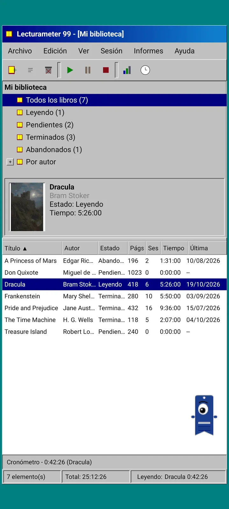
Qué es
Un programa de escritorio de finales de los noventa metido en tu móvil. Una sola ventana sobre un escritorio verde azulado, barra de menús, barra de herramientas, árbol de carpetas, tabla densa y barra de estado.
- Biblioteca en árbol: todos los libros, leyendo, pendientes, terminados, abandonados y por autor
- Tabla con título, autor, estado, páginas, sesiones, tiempo y última lectura. Toca una cabecera para ordenar
- Búsqueda de libros real, con el mismo catálogo que usa Lecturameter
- Importa y exporta la copia de seguridad de Lecturameter y el CSV de Goodreads. Tus datos entran y salen sin perder nada
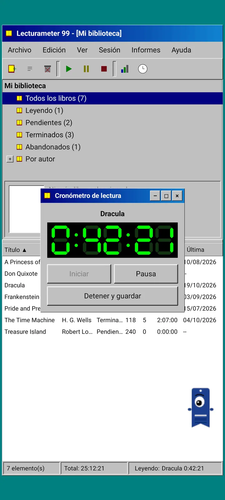
Por qué existe
Un experimento: reconstruir la idea de Lecturameter desde cero bajo premisas de diseño radicalmente distintas, sin tocar la app real. De todas las reinterpretaciones, la de 1999 fue la que más me gustó, así que la terminé como ejercicio divertido y la convertí en un cliente completo. Es más simple que Lecturameter a propósito: es un experimento y, en principio, no va a tener más desarrollo.
- Cronómetro en una ventana flotante con display LCD verde. Se mueve, se minimiza a una barra de tareas y sigue contando en la barra de estado
- Al parar, el diálogo de guardar sesión te deja registrarla por páginas, por porcentaje o solo por tiempo, y calcula el ritmo igual que en Lecturameter
- Las sesiones guardadas son sesiones de Lecturameter: vuelven a la app moderna si exportas un backup de Lecturameter 99 y lo importas en Lecturameter.
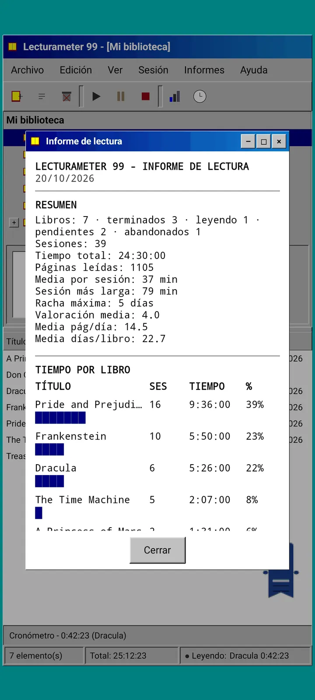
Informe de lectura
Las estadísticas son un informe impreso en texto monoespaciado: resumen, tiempo por libro con barras de bloques y velocidad en páginas por día.
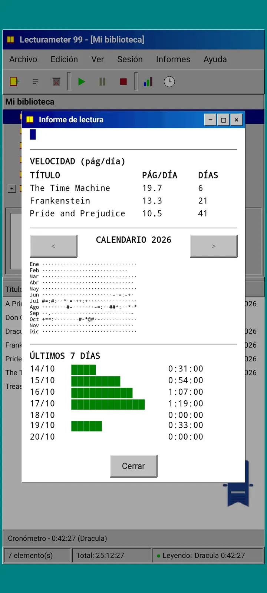
Calendario del año
Cada día del año se dibuja con un carácter según las páginas que leíste, y debajo van los últimos siete días con barras de bloques.
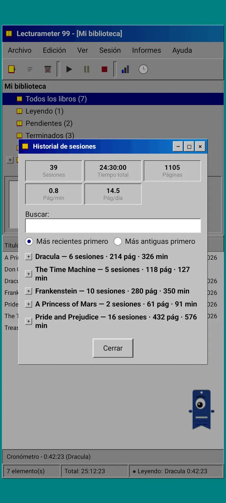
Historial de sesiones
Sesiones agrupadas por libro en un árbol con más y menos, con cinco cifras arriba: sesiones, tiempo total, páginas, páginas por minuto y páginas por día.
Temas
Clásico 98 es gratis y viene por defecto. El pack añade seis más en Android y cuatro en iPhone, cada uno con su fondo y sus sonidos.
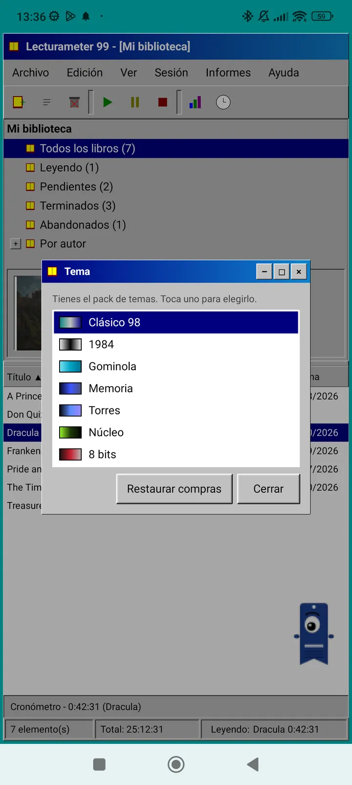
Se elige en el menú Ver
Ver, Tema... abre una ventana con los temas: siete en Android y cinco en iPhone. El cambio llega al momento a todas las ventanas, al cronómetro y a Pagi.
- Clásico 98, gratis y por defecto: ventanas grises, barras de título azul marino y escritorio verde azulado
- Pack de temas: 1984, Gominola, Memoria, Torres, Núcleo y 8 bits. En iPhone, sin 1984 ni Gominola
- Cada tema trae su fondo de escritorio y sus sonidos para los toques, las ventanas y el cronómetro
- Ver, Sonidos del tema los apaga si lees en silencio
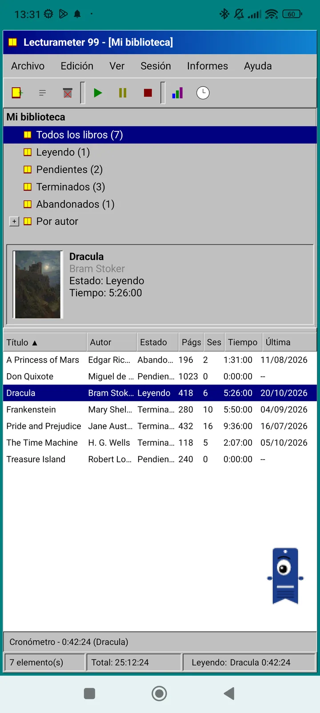
Clásico 98
Ventanas grises, barras de título azul marino y escritorio verde azulado. Gratis, es con el que se abre la app.
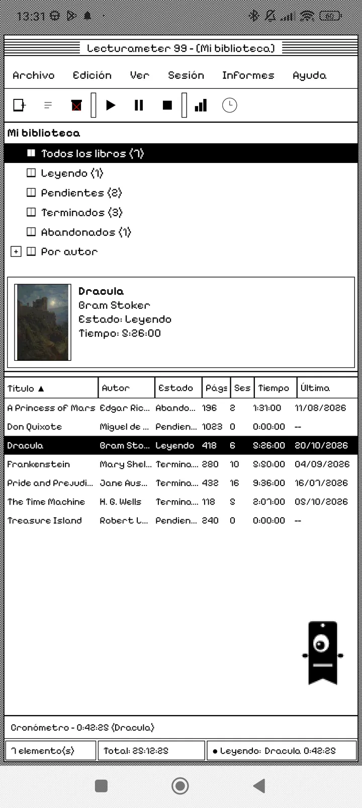
1984
Escritorio en blanco y negro de un bit, con tramas de puntos y ventanas cuadradas. Solo en Android.
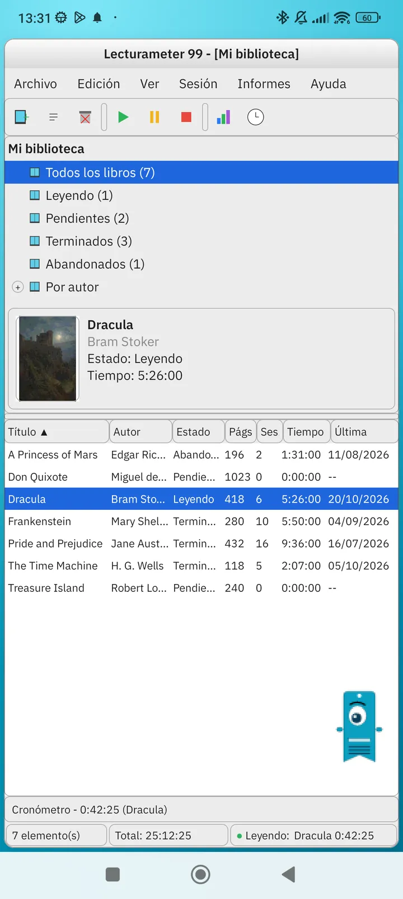
Gominola
Plástico translúcido de colores, botones redondeados y rayas de fondo. Solo en Android.
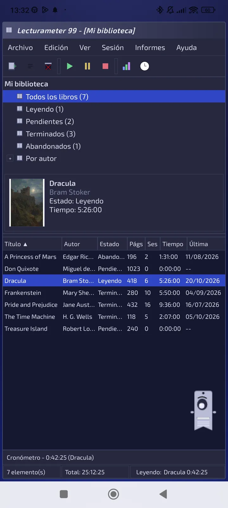
Memoria
Los menús de una consola de discos de los 90, en azules oscuros.
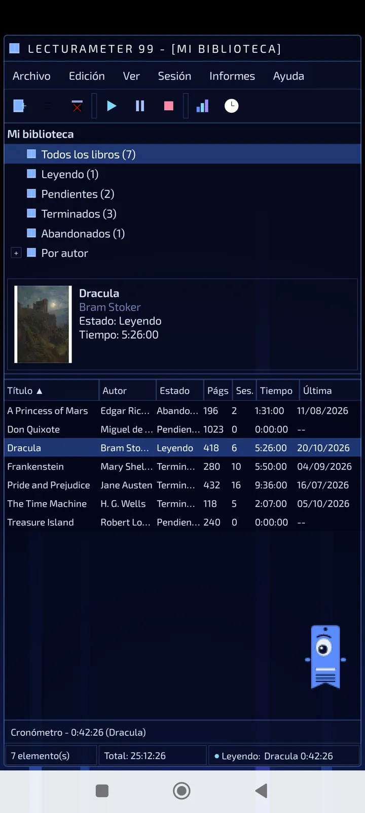
Torres
Otra consola de discos de los 90, azul noche con líneas azul claro.
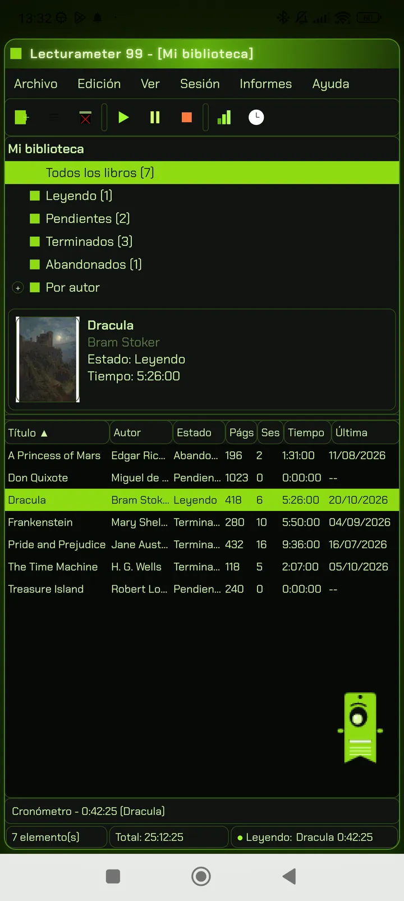
Núcleo
Consola negra y verde, como una pantalla que no se apaga nunca.
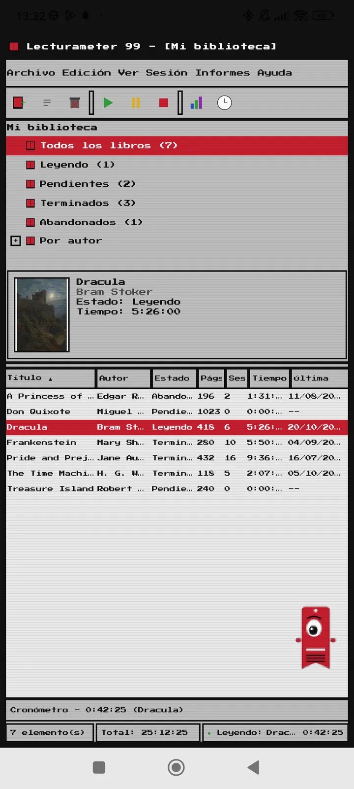
8 bits
Píxeles gordos, pocos colores y letras de bloque.
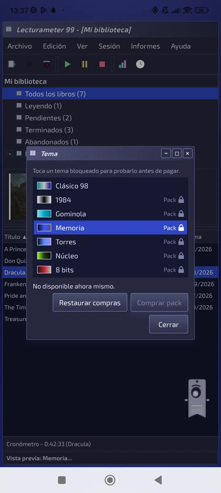
Pruébalo antes de pagar
Tocas un tema bloqueado y toda la app se cambia a ese tema. Si cierras sin comprar, vuelve el que tenías.
Salvapantallas
Solo salen con el cronómetro en marcha y sin tocar el móvil. Esperan 1, 3 o 5 minutos, o nunca. Un toque y vuelves, el cronómetro sigue contando.
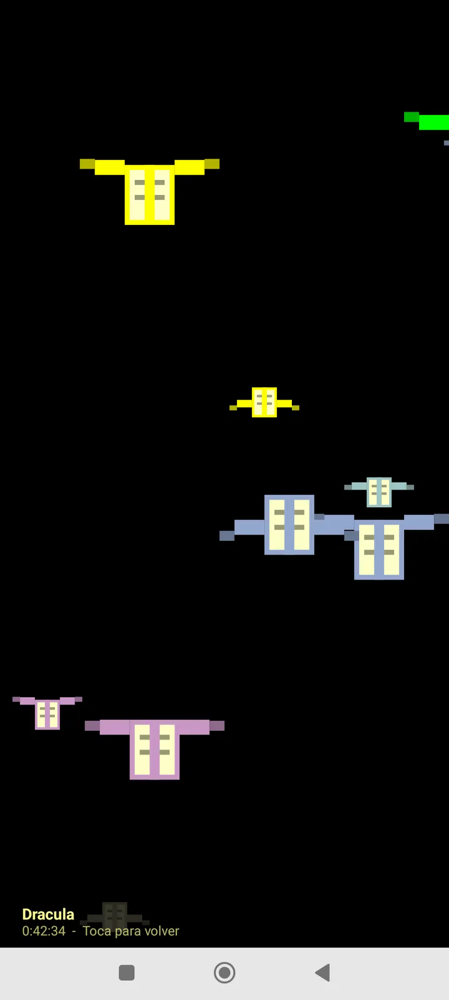
Libros voladores
Libros de píxeles que vuelan batiendo las tapas sobre fondo negro.
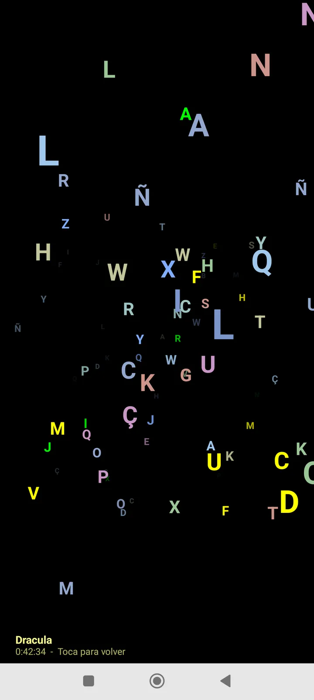
Campo de letras
Letras de muchos alfabetos que pasan despacio, como un campo de estrellas.
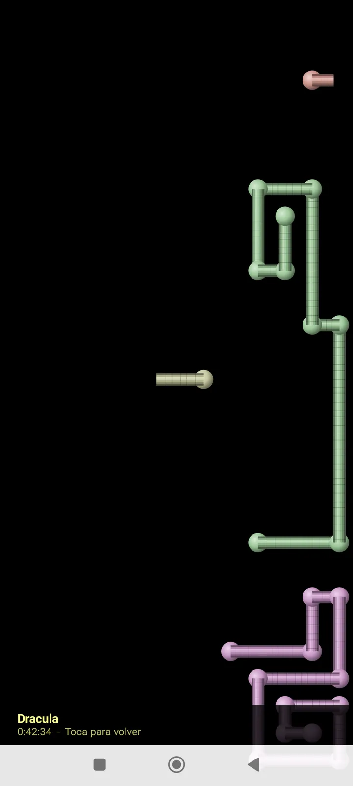
Tuberías de páginas
Tuberías hechas de páginas que se dibujan solas hasta llenar la pantalla.
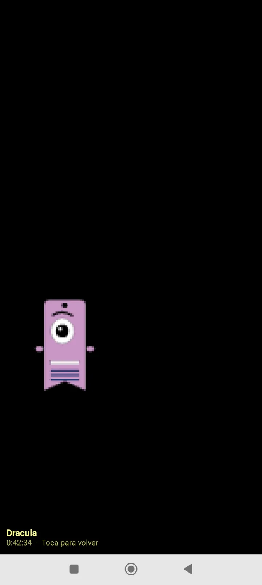
Pagi rebota
Pagi rebotando contra los bordes de la pantalla.
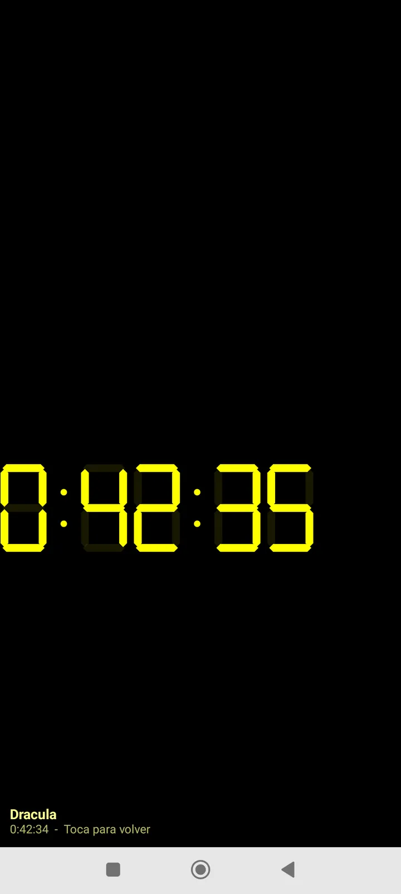
Reloj de lectura
El tiempo de la sesión en números LCD grandes.
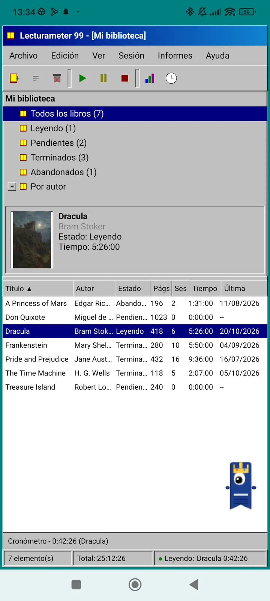
Pagi 99 y sus disfraces
Pagi también viaja a 1999: pixelado y suelto por la pantalla, como los asistentes de oficina de la época. Se arrastra, habla al tocarlo y enseña los consejos en globos amarillos. Tiene ocho disfraces, que se eligen en Ver, Disfraz de Pagi..., y puedes probarlos antes de pagar.
- Reproductor de cinta
- Gorra hacia atrás
- Gafas 3D
- Gafas de sol neón
- Disquete en mano
- Chupa de cuero
- Mascota de bolsillo
- Corona de cartón
Tienda
La app es gratis y completa para registrar tus lecturas. Lo que se compra solo cambia cómo se ve.
La app entera, sin límite de tiempo.
- Biblioteca, búsqueda, cronómetro y sesiones
- Informe de lectura e historial de sesiones
- Sesiones manuales y guardadas por páginas, por porcentaje o por tiempo
- Consejo del día y envío de comentarios desde el menú Ayuda
- Copia de Lecturameter y CSV de Goodreads, de ida y vuelta
- Tema Clásico 98 y Pagi 99
- Sin cuenta y sin anuncios
Pagos únicos, sin suscripciones.
- Pack de temas, 3,49 €: 6 temas con fondo y sonidos, y los salvapantallas
- Salvapantallas, 1,99 €: los 5 salvapantallas
- Disfraces de Pagi, 1,99 €: los 8 disfraces
- Todo el 1999, 4,49 €: temas, salvapantallas y disfraces
Solo en Android: propinas opcionales en el menú Ayuda, si quieres invitarme a un café.
En iPhone no hay propinas ni los temas 1984 y Gominola (Apple no los admite); el resto es igual.
Los temas y los disfraces se prueban en vivo antes de pagar. Si cierras sin comprar, vuelve lo que tenías.
Qué cambia respecto a Lecturameter
Igual que Lecturameter
- Mismos datos: libros, sesiones, estados, valoraciones y notas. La copia de seguridad es la misma en las dos apps.
- Búsqueda de libros por título o autor.
- Cronómetro real: sigue contando en segundo plano y aunque cierres la app.
- Sin cuenta ni anuncios. Solo usa internet para buscar libros y, si las dejas activadas, para las estadísticas de uso y los informes de fallos anónimos (se apagan en Ayuda, Privacidad).
- Disponible en 50 idiomas.
Solo en el 1999
- Interfaz de escritorio de 1999. Nada de Material.
- Ventanas de verdad: se arrastran, se minimizan y se cierran con la equis.
- Informe de lectura en texto, con calendario en caracteres.
- Menú contextual al mantener pulsado y atajos de teclado si conectas uno.
- Pagi 99 pixelado con globos de consejos.
- Temas opcionales con su fondo y sus sonidos, salvapantallas mientras corre el cronómetro y disfraces para Pagi.
Lo que no tiene, a propósito
- Sin Pro y sin suscripción. Registrar tus lecturas es todo gratis, la tienda solo vende aspecto.
- Sin retos, bingos, resumen anual ni widgets.
- Sin sesión inmersiva, sonidos ambiente ni copia en Google Drive. La copia se guarda como archivo.
Consíguela
Lecturameter 99 es gratis y está disponible para iPhone y para Android.
Lee la entrada del blog para ver de dónde sale y qué puedes esperar.